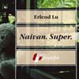

torek, 2. februar 2010.
U zadrugu po hranu
Zahvaljujući Mr. Delti - i bez obzira šta priča Mr. ministar Milosavljević - hranimo se pretežno skupo, a izbor je mali, kad se uporedi sa evropskim prosekom..
E, sad, zamislite da nekome u Beogradu kažete da jedna od opcija da kupuje zdravu hranu po povoljnim cenama, i do 40 posto nižim od uobičajenih, da odradi svoju smenu u magacinu/prodavnici? Pretpostavljam da bi većina bila zapanjena i posumnjala da neko vraća komunizam zadružnog tipa.
petek, 3. julij 2009.
Naivan super u biznisu

"Dok sedim na klupi i ispijam milkšejk, dobijam ideju. To je poslova ideja.
Inspiriše me ovo kapitalističko okruženje.
Moja ideja je jedna telefonska služba.
Ispitaću mogućnost organizovanja neke takve službe.
Ali biće prijatna..."
sreda, 31. december 2008.
365 dana
Poslednji dan 2008. je zgodan trenutak da se na brzinu isplanira kreativan projekat za 2009. Za ovu konkretnu ideju potrebno je: FlickR pro nalog, kamera, i možta malo iznadprosečna doza entuzijazma.
ponedeljek, 11. avgust 2008.
E-tvrđava
ãetrtek, 20. december 2007.
Sisar dnevno
sobota, 1. december 2007.
1000 evra
ponedeljek, 5. november 2007.
Arhipelag Evropa
sreda, 17. oktober 2007.
In Rainbows
ãetrtek, 27. september 2007.
Za Nenada Bogdanovića
ponedeljek, 24. september 2007.
Getting Things Done
petek, 21. september 2007.
Jesenji Blog Open
petek, 17. avgust 2007.
Dajte i meni toga
nedelja, 10. junij 2007.
Balkanske teme i drame
torek, 15. maj 2007.
Španske slike, 2. deo
nedelja, 6. maj 2007.
One Mile from Home
nedelja, 3. december 2006.
3. decembar
torek, 28. november 2006.
Ett Herrans Liv
sreda, 27. september 2006.
Jezički autobusi
ponedeljek, 24. julij 2006.
Tesla is not dead
ãetrtek, 20. julij 2006.
Bicikl, pa Kjoto
petek, 9. junij 2006.
Spori gradovi
torek, 30. maj 2006.
Smoke Art
sreda, 24. maj 2006.
Parkovi su super
ponedeljek, 22. maj 2006.
Evro Vizija
sreda, 26. april 2006.
Prodaje se...!
nedelja, 4. december 2005.
Močuga

 RSS feed
RSS feed
 sadržaji se objavljuju pod
sadržaji se objavljuju pod